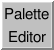

Palette Editor 
A palette is an ordered set of colors and associated
method of interpolation.
The Palette Editor allows creating custom palettes and
choosing a palette from numerous preset options and any previously
created custom palettes. See also:
the Color Editor,
background
There are several ways to start
the Palette Editor, a tool in the Utilities category.
In addition, clicking a palette well
(analogous to a color well
but rectangular rather than square, such as used for a
gradient in the
Background preferences)
opens the Palette Editor.
Interpolation options:
- HLS (default)
- in hue-lightness-saturation (colorwheel) color space
- RGB - in red-green-blue color space
- discrete - no interpolation,
sharp transitions from one color to another
The Presets section provides access to many built-in color schemes.
The schemes were copied from
ColorBrewer
on May 19, 2011, and should be credited as follows:
Brewer, Cynthia A., 2011.
https://colorbrewer2.org,
accessed 19 May 2011.
The preset schemes are categorized by Type based on the
data they were designed to represent:
- sequential - unsigned ordered data (magnitude comparisons)
- diverging - signed ordered data or other situations
where the two extremes are to be emphasized equally
- qualitative - categories or groupings without magnitude comparisons
The Custom section provides a user-specified number of
color wells (up to 12)
for defining a new palette. Clicking a color well brings up the
Color Editor for interactive color
definition. The colors together with the method of
interpolation comprise a palette.
Palettes can be named, saved, and later retrieved from the pulldown list
indicated by the black inverted triangle near the top of the dialog.
A built-in palette (Chimera default or any of the presets) cannot be
overwritten or deleted, but it can be saved to a new name.
Custom palettes are saved in the Chimera
preferences file,
and are only updated with any changes
when Save, Save As, or Delete is used.
The Help button brings up this manual page in a browser window.
Close dismisses the Palette Editor.
UCSF Computer Graphics Laboratory / June 2011